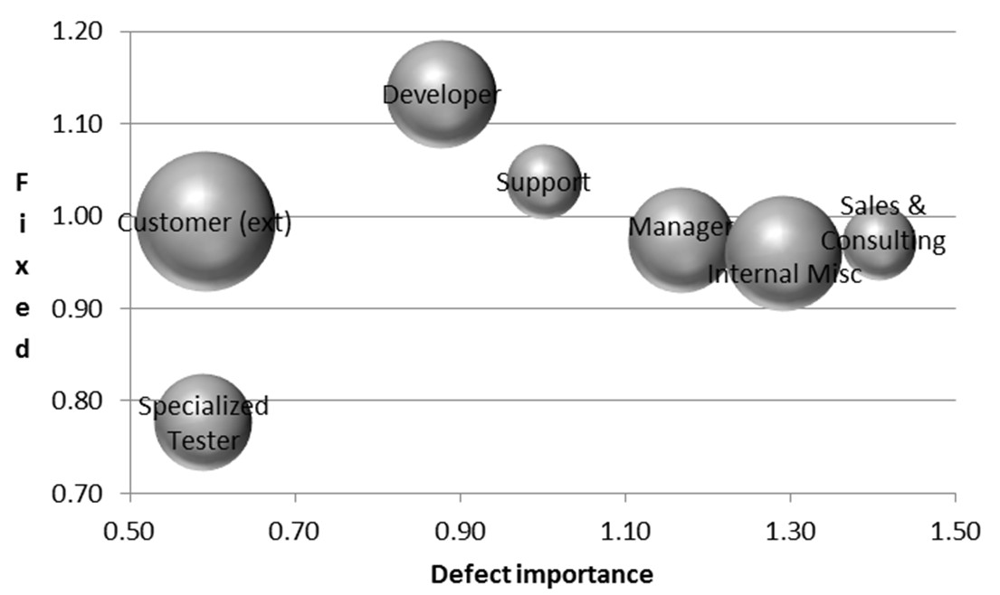

What's in this paper?
- Testing is not an action conducted only by specialized testers.
- Testing is performed by people in different roles like developers, managers, and consultants.
- Developers had the highest defect fix rates while specialized testers had the lowest fix rates.
- Testing by individuals with customer contact and domain expertise is highly valued QA method.
- The defect importance is used in organizational competition of resources (i.e., assigning higher importance to defects in own products or projects).
Abstract
There is a recognized disconnect between testing research and industry practice, and more studies are needed on understanding how testing is conducted in real-world circumstances instead of demonstrating the superiority of specific methods. Recent literature indicates that testing is a cross-cutting activity that involves various organizational roles rather than the sole involvement of specialized testers. This research empirically investigates how testing involves employees in varying organizational roles in software product companies. We studied the organization and values of testing using an exploratory case study methodology through interviews, defect database analysis, workshops, analyses of documentation and informal communications at three software product companies. We analyzed which employee groups test software in the case companies, and how many defects they find. Two companies organized testing as a team effort and one company had a specialized testing group because of its different development model. We found evidence that testing was not an action conducted only by testing specialists. Testing by individuals with customer contact and domain expertise was an important validation method. We discovered that defects found by developers had the highest fix rates while those revealed by specialized testers had the lowest. The defect importance was susceptible to organizational competition of resources (i.e., overvaluing defects of reporter’s own products or projects). We conclude that it is important to understand the diversity of individuals participating in software testing and the relevance of validation from the end-users’ viewpoint. Future research is required to evaluate testing approaches for diverse organizational roles. Finally, to improve defect information, we suggest increasing automation in defect data collection.
Ref
Mäntylä, M. V., Itkonen, J., Iivonen, J., "Who Tested My Software? Testing as an Organizationally Cross-Cutting Activity ", Software Quality Journal, vol. 20, issue 1, January 2012, pp. 145-172.
{kind=link}